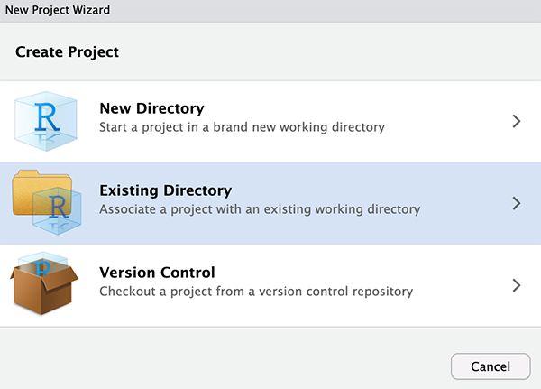
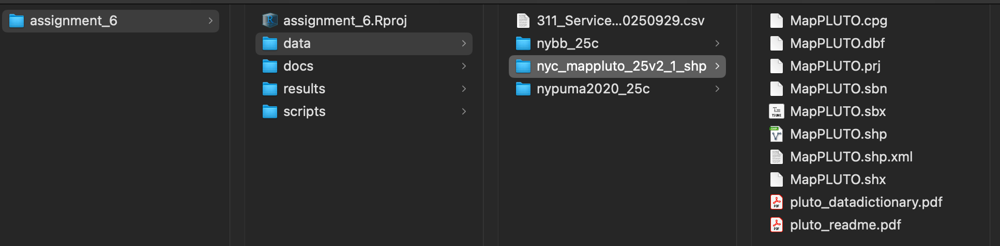
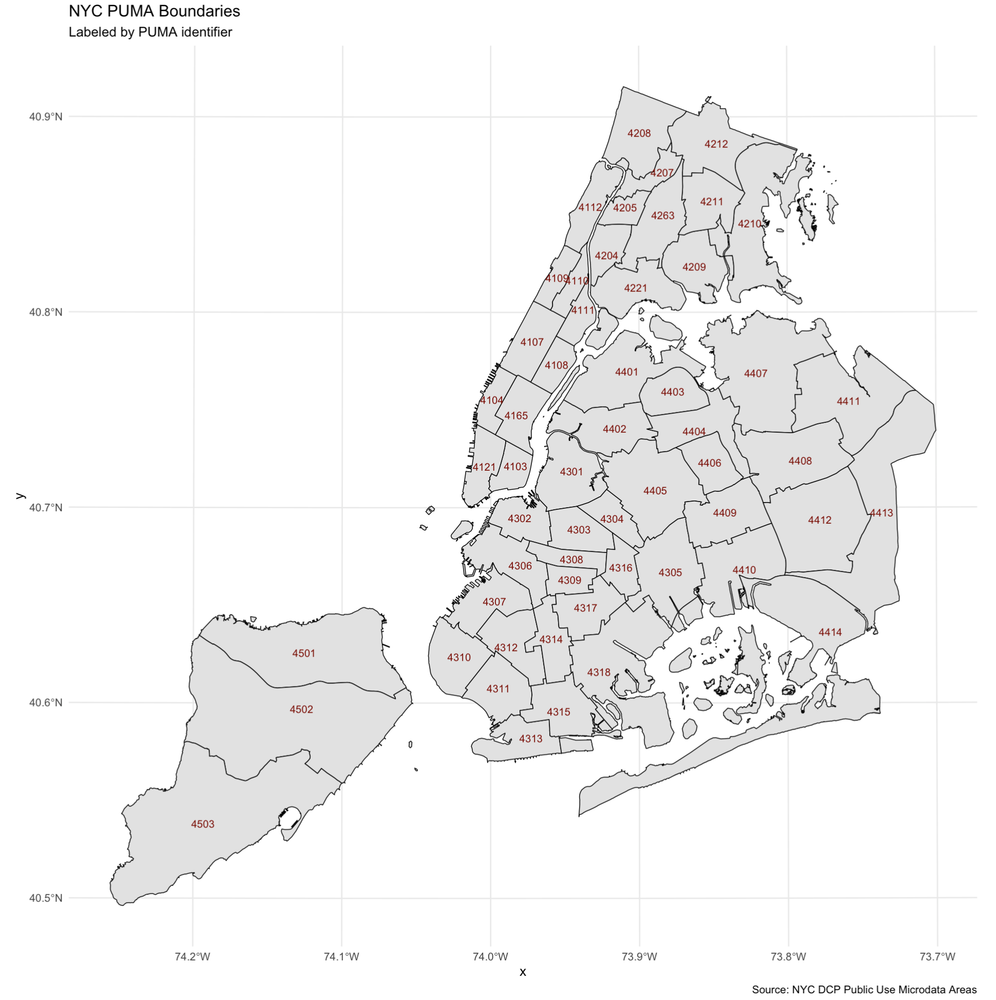
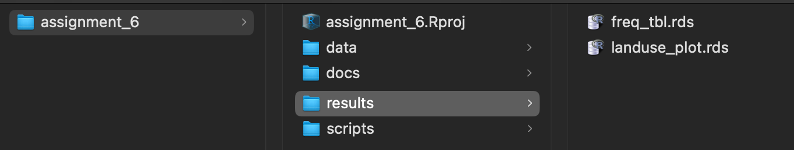

Class 6 Assignment: Land Use Mapping at Neighborhood Level (PUMA) in NYC.
Fall 2025 | Instructor: Stephen Metts | PGUD 5160 - CRN 2247
Preamble
In this sixth week’s assignment, we will utilize some of the scripting framework of Class 6 lab to develop an R Markdown report that features one categorically themed Land Use map for a PUMA of your choice in New York City.
Follow the sequence of steps below to first orient to this week’s content: lecture, materials and weekly reading(s). Once complete, move along to first processing script #1 and script #2, then develop the R Markdown deliverable. The assignment deliverable is due Thursday, October 9th, 2025 at 11:59pm.
Week 6 Class 6 Materials:
Week 5 Class 5 Reading:
Next week’s quiz 6 will feature 5 multiple choice questions, and 5 True or False questions on the following online, accessible article:
As we work with Land Use parcels in New York City, a larger discussion can be had that incorporates the history and socioeconomic impacts of property classification systems. This week’s reading is a good primer on this critical discussion.
At 7am Friday, October 10th, the sixth weekly quiz will open in Canvas. Utilize the posted Class 7 Agenda to gain the quiz access code which will be posted towards the beginning of the agenda. Expect 10 questions in total that cover the reading above.
Class 5 Assignment:
Step 1:
Similar to how we started our assignment_5 project directory (this is a repeat of the previous week setups), we will first simply copy/paste the lab_6 directory at the desktop and name the new copied directory assignment_6. Remove all the data and results from assignment_6 that came from the copy of lab_6; we will start fresh in this assignment with the two script options to pull the necessary data needed for our data analysis and visualization.
Create a new R project; utilize an Existing Directory and point it to the just copied assignment_6 folder:

Run the standard getwd() before beginning assignment_6, ensuring you are within the newly created assignment_6 project directory.
Also, utilize the list.files() function to show all data paths and documents;
Like previous assignments, we will again be adapting and delivering a R Markdown File as the assignment_6 deliverable.
Step 2:
To start working on assignment_6, download the assignment script #1 and #2 and place them in the /scripts subdirectory:
In the first script, like lab_6, we simply want to print a plot map of the various PUMAs in NYC. The goal here is to pick one PUMA, noting its 4 digit identifier.
Next, similar also to lab_6, download the data needed for this week’s assignment for the previous link. Download, uncompress and organize into your /data subdirectory, which should appear as follows once complete:

Once the necessary data is organized, open script #1 and read in the nypuma2020.shp. This short script then plots the PUMA geometry and then labels the 4 digit ID number. Use the resulting map from the script to make your choice of one (1) PUMA. In the lab_6, we utilized PUMA 4103; make sure to chose another, separate PUMA.

Step 3:
Next, open Class 6 Assignment scrip #2.
To start, a sf object for both the PUMAs and the MapPLUTO data is created. at line 31, you will need to adjust the current reference to 4103 to the unique identifier for your chosen PUMA:
For labeling purposes, you will also need to reference the census listing for NY State PUMAs:
In our assignment example PUMA 4103 reads as follows:
DC20PUMA_3604103 3604103 NYC-Manhattan Community District 3--Lower East Side & Chinatown
Next, the sf functions are run for cropping and intersecting occur. As we experienced in the lab setting, this will take some time to prepare the subset for your choice of PUMA.
Once complete, map the resulting parcels within the chosen PUMA to make sure your sf processing looks good and correct before plotting the land uses within the PUMA.
Next, move along to developing your frequency table and then creating the gt version of the table. Note that all along we are using the object pluto_4103. You may - and should - change the naming of your object pluto_4103 first at lines 37-38, and follow through in the proceeding script lines where pluto_4103 appears to rather read as pluto_IDENTIFIER_CHOSEN_PUMA. Importantly, you’ll want to change any reference to PUMA 4103 in both the table and in the mapped plot.
Once you have your freq_tbl produced, make sure to also save it as an RDS object that you can read back into your .Rmd document.
# save your resulting freq_tbl as an RDS object
saveRDS(freq_tbl, file = "~/Desktop/assignment_6/results/freq_tbl.rds")Further along, create your plot map for land use using ggplot, and name the resulting object landuse_plot. Make sure to print the plot, checking the visual results. Once all looks correct, save landuse_plot just as was done for freq_tbl:
# save your resulting landuse_plot as an RDS object
saveRDS(landuse_plot, file = "~/Desktop/assignment_6/results/landuse_plot.rds")In the end, you should have two new .rds files located in the /results subdirectory:

.rds prior to working in assignment_6 .RmdClass 6 Assignment - Develop .Rmd Submission
From within your assignment_6 project, navigate to the docs folder. This is the location in which you will first download the example R Markdown file (.Rmd), and open it anew in your project. Alternatively, you can create your own R Markdown file, but the download version has some formatting set up that can be a helpful start point (as was the case for previous assignment starter .Rmd files).
To open an existing R Markdown file:
File > Open File > assignment_6 > docs > assignment_6.Rmd
To create your own R Markdown file:
File > New File > R Markdown
Next, loading, working with and saving data in the Console is NOT the same as loading, displaying and plotting data in an .Rmd file. Keep in mind that the Console is the iterative, working environment, whereas .Rmd is designed for publishing and sharing your analysis results.
So, the first step following the completion of accessing, transformation, plotting and saving both the frequency table and the land use map as .rds objects is to load them within the .Rmd environment.
We load the data as follows from within the .Rmd document. Utilize the green run button to the far right of the code block to execute the code:
# Load the frequency table
freq_tbl <- readRDS("~/Desktop/assignment_6/results/freq_tbl.rds")
# Display the loaded plot
print(freq_tbl)# Load the saved ggplot object
landuse_plot <- readRDS("~/Desktop/assignment_6/results/landuse_plot.rds")
# Display the loaded plot
print(landuse_plot)A placeholder code chunk for each of these sections is located in the starter .Rmd.
Make sure to load in your required libraries at the top of the script.
As you finalize your code and bring it into your .Rmd submission document, all components - the libraries, the data object and the plotting code - need to exist in the .Rmd environment as it operates separate of your Console environment.
For your contextual writing and observations consider the following prompts:
- What are the prominent land uses in your chosen PUMA?
- Does the pattern and the frequency of the land uses concur with your own qualitative and/or anecdotal understanding of your chosen PUMA?
The assignment 6 submission is due to Canvas on Thursday, October 9th, 2025 at 11:59pm. The format can and should be an .html document format generated from your Rmd document as gt tables print much easier without formatting issue in .html over .pdf format.
Note that when you knit your output, the .Rmd should not be removed; that is, keep it in your assignment folder in addition to the final .html submission.
The Assignment 6 R Markdown deliverable is due to Canvas on Thursday, October 9th, 2025 at 11:59pm.